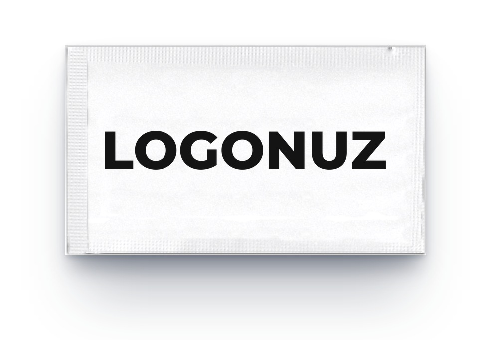

İşletmenizin markası, müşterinizin her temasında.
Tek tek paketli, logolu ıslak havlu, ıslak mendil ve Oshibori. Restoran, otel, kafe ve hizmet işletmelerine özel üretim.

Rulo ıslak havlu
25×25 · 25×30 · 30×30 · 30×35 cm
Nonwoven, çapraz doku · paket 17 cm

Katlı ıslak havlu
20×25 cm
Nonwoven, çapraz doku · paket 14 cm

Islak mendil
Paket 7×12 cm · açılınca 16×18 cm
Nonwoven · 4 koku seçeneği

Renkli zemin de olur
Bütün ürünlerde beyaz veya renkli zemin
Rulo, katlı, mendil ve Oshibori · logolu ya da baskısız
Kurumsal Ürün Kataloğuhijyenlab.com